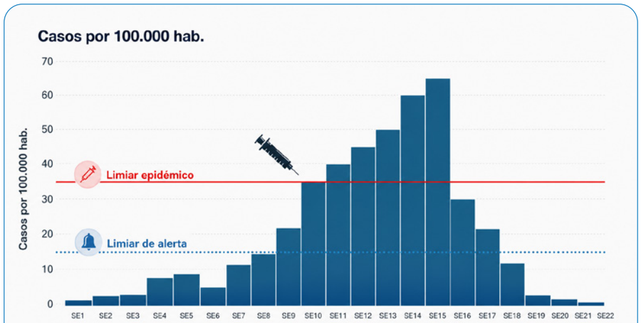

Como um evento suspeito é detectado, notificado e transformado numa resposta organizada.
Quem detecta, notifica e responde.
Os profissionais envolvidos na investigação de surtos devem possuir um conjunto de competências que lhes permita identificar, caracterizar e controlar surtos de forma eficaz. Estas competências incluem:
US
Dados de Vigilância activa e passiva
Midia
Comunidade
Fontes de alerta e notificação de eventual surto notificação do evento
Da suspeita à confirmação inicial.
A identificação precoce de um surto é essencial para implementar intervenções de saúde pública em tempo oportuno e reduzir o impacto da disseminação da doença. A identificação de surtos a partir da análise de dados obtidos no âmbito dos sistemas de vigilância em saúde é uma óptima demonstração da sensibilidade do sistema, ou seja, da sua capacidade de detectar casos e mudanças no padrão de ocorrência de determinada doença.
Avaliar se este aumento constitui de facto um surto exige uma análise criteriosa e uma comparação com limiares predefinidos. Dois conceitos fundamentais neste processo são o limiar de alerta e o limiar epidémico (Figura 3), ambos utilizados para monitorar a intensidade e a progressão da doença e guiar as respostas de saúde pública.

Figura 3. Evolução de casos por semana epidemiológica com limiares de alerta e epidémico
Antes de identificar um surto, é importante compreender os níveis basais ou os padrões normais da doença numa determinada população. Esta linha de base pode ser estabelecida através de sistemas contínuos de vigilância da doença que rastreiam o número de casos notificados ao longo do tempo. Os níveis normais podem flutuar sazonalmente ou ciclicamente, por isso é importante ter em conta estas variações.
O limiar de alerta refere-se ao ponto em que o número de casos começa a subir acima dos níveis esperados, sinalizando uma potencial ameaça à saúde pública. Este limiar não indica necessariamente a presença de um surto, mas serve como um sistema de alerta precoce, desencadeando uma vigilância mais intensa, investigações preliminares e intervenções precoces, mesmo antes da confirmação de um surto. Esse processo permite que as autoridades de saúde recolham informações adicionais, reforcem a vigilância e se preparem para uma possível escalada.
O nível a partir do qual se investiga.
Os limiares são estabelecidos com base em dados epidemiológicos históricos, sistemas de vigilância e características das doenças. Ao estabelecer limiares de alerta e epidémicos, as autoridades de saúde devem considerar:
Análise de dados de vigilância.
Dados de vigilância de um distrito, doença diarreica aguda:
Compare a semana actual com a linha de base e decida.
Sabe identificar eventos suspeitos, aplicar limiares e activar a resposta pelo fluxo de notificação.